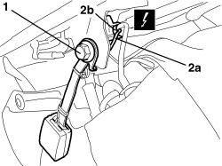
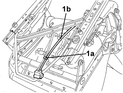
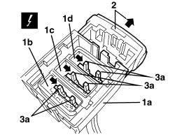
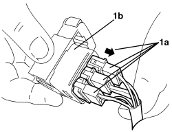

7065A14 ANCHORAGE ROD FOR , (ONE), FRONT SEAT BELT LEFT OR RIGHT - R.R.
- Path
- Procedures > 70 FITTINGS > 7065 SEAT BELTS AND ACCESSORIES > 7065A FRONT SEAT BELTS > 7065A14 ANCHORAGE ROD FOR , (ONE), FRONT SEAT BELT LEFT OR RIGHT - R.R.
- Kind
- repair procedure (removal / refitting; the operation number is the code)
- Applies to
- all engines; all production periods
- Interactive page
- https://sloeber94.github.io/elrnDB-aBrrSpdr/en/#/946004197
Applies to: all engines; all production periods
 Removing
Removing
 Refitting
Refitting- Raise the seat until it is in the end of travel position.
Op. 7045A10 FRONT SEAT (ONE), LEFT OR RIGHT - R.R.
1. Undo the anchorage link retaining bolt
2. Release the electrical wiring (2a) for the mounting rod from the retaining band (2b).
Description | Connector | |
|---|---|---|
2 | DRIVER-SIDE SEAT BELT SWITCH | |
2 | PASSENGER-SIDE SEAT BELT SWITCH |

Applies to: all engines; all production periods
1. Working on the lower part of the seat, disconnect the wiring (1b) retaining band (1a) for the mounting rod.

Applies to: all engines; all production periods
1. Remove the connector concerned (1b), (1c), (1d) from the connector holder (1a) working as described later on.
Description | Connector | |
|---|---|---|
1 | DRIVER'S SEAT COUPLING | |
1 | PASSENGER SEAT COUPLING |
2. If inserted, extract the locking slide.
3. Using a screwdriver, move the fastening levers (3a) sideways, in the direction of the arrows.

Applies to: all engines; all production periods
1. Extract the individul connectors (1a) from the connector holder (1b).

Applies to: all engines; all production periods
Refitting
Removing- Check that the anchorage link with wiring is not damaged.
- Position the anchorage link with wiring.
- Fit the connector in the connector holder and place the lever in the centre.
- Position the anchorage link wiring.
- Working on the lower part of the seat, connect the electrical wiring for the mounting rod to the retaining bands.
- Tighten the mounting rod retaining bolt
Component | Fastening | dia | Value (daNm) | Validity |
|---|---|---|---|---|
SEAT BELT BRACKET ON FRONT SEAT | Bolt | 7/16” | 3.15 ÷ 3.85 |
- Return the seat to the correct position.
- Test the correct operation of the anchorage link and the seat belt unfastened warning light.
Topics linked from this page (5)
- 7045A10 FRONT SEAT (ONE), LEFT OR RIGHT - R.R.
- D070 DRIVER'S SEAT COUPLING
- D071 PASSENGER SEAT COUPLING
- I046 DRIVER'S SEAT BELT SWITCH
- I047 PASSENGER SEAT BELT SWITCH